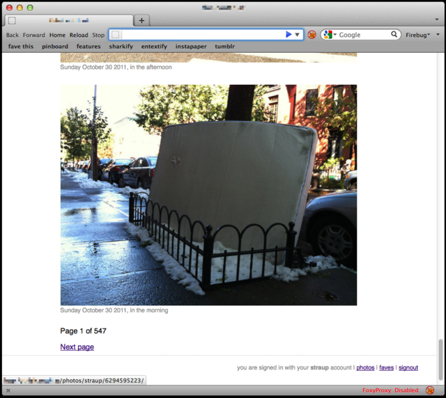

parallel-flickr is a tool for backing up your Flickr photos and generating a database backed website that honours the viewing permissions you've chosen on Flickr.
parallel-flickr is still a work in progress. It ain't pretty or classy yet but it works.

- It downloads and stores your original photos and their "640x" versions. Currently photos are stored locally but there's a plan to add support for S3.
- For each photo it downloads and stores the contents of the flickr.photos.getInfo API method as a JSON file. (None of that data is displayed yet but at least it's there.)
- It stores enough data about each photo in a database so that it can reconstruct your photostream and create a webpage for each photo. With the same photo ID. And the same URL structure. With Flickr-style path aliases and everything.
- It uses the Flickr API as a single sign-on and validation service, which means that the site can fetch and store your contact list and relationship which each person in it.

Currently parallel-flickr lacks any useful documentation or installation instructions. That will change. Here's a blog post in the meantime.
Download
You can download this project in either
zip or
tar formats.
You can also clone the project with Git
by running:
$ git clone git://github.com/straup/parallel-flickr